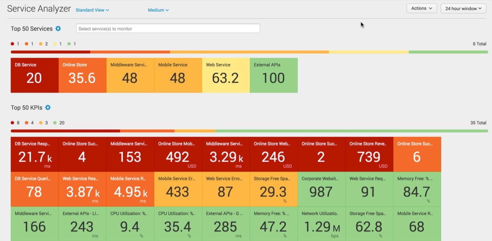
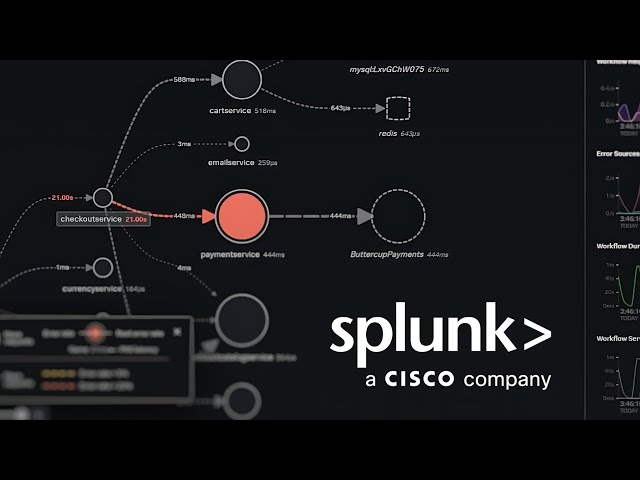

Splunk Observability Workshops - KOREAN 🇰🇷

Splunk4Ninja - Observability
Splunk Observability Cloud의 모니터링, 분석 및 대응 도구를 통해 실시간으로 애플리케이션과 인프라에 대한 인사이트를 얻으세요. 이 워크샵에서는 메트릭, 추적 및 로그 수집, 모니터링, 시각화 및 분석을 위한 통합 가시성 플랫폼에 대해 안내합니다

Splunk4Ninja - ITSI
비즈니스 KPI와 IT 인프라의 연결, 그리고 AIOps 도입을 위한 ITSI 를 테스트합니다. 이 워크샵에서는 ITSI의 기본이 되는 서비스, KPI, 엔티티 등의 요소를 직접 만들어보고 threshold를 걸어 봄으로써 ITSI의 기본 동작 원리와 AIOps로의 도약을 위한 인사이트를 제공합니다

Splunk O11y - Isovalent Integration
Isovalent Enterprise Platform과 Splunk Observability Cloud를 통합하여 eBPF 기술을 활용해 Kubernetes 네트워킹, 보안 및 런타임 동작에 대한 포괄적인 가시성을 확보하는 방법을 시연합니다.

Splunk O11y - Advanced Collector Configuration
Splunk Observability Cloud 의 기본 설정 이외에 고급화 된 설정과 활용방안에 대해서 다룹니다. 에이전트 사용 및 Configuration 파일 수정이 가능한 중급 이상의 대상자를 위한 워크샵입니다.